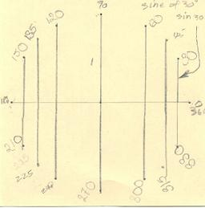
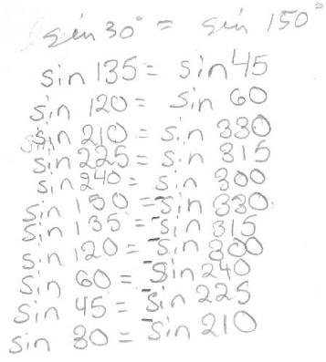
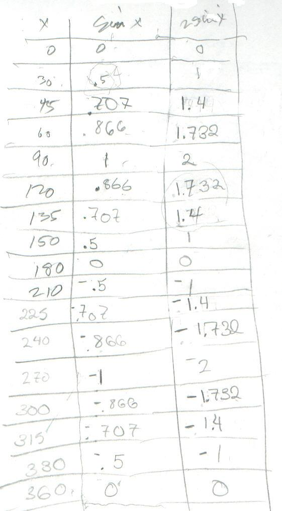
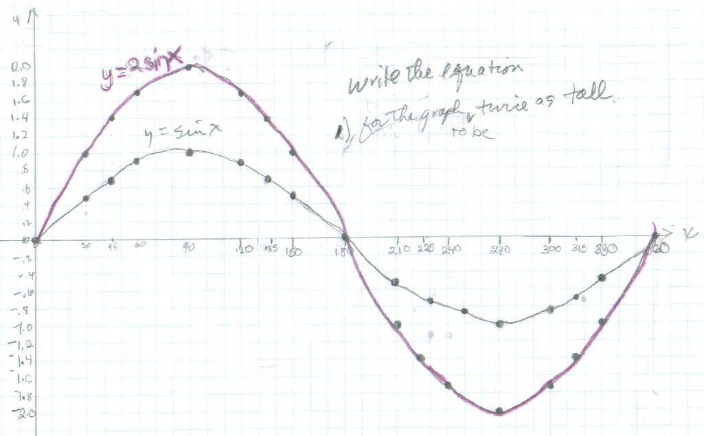

Sheri, a 5th grader, begins trig
This is a 12 point circle. All of the points are 30 degrees
apart. Then Mr. Cohen added the points at 45° around. Each of them are equal to one other point on the circle.

All of these are equal to each other:

[Sheri measured the lengths of the segments for the sines of 30°, 45°, and 60°, then found the ratios of these to the measured distance for 90° and came out very close to the calculator values in the table below for sin x.]

I graphed y=sin x, then found the equation for the graph to be twice as tall ( y= 2 sin x); I multiplied each sine value by 2".

Don went over things like 2x.7 = 1.4 which Sheri wasn't sure about. But it was her idea to double sin x to get the equation of the graph to be twice as tall. Fine job Sheri!